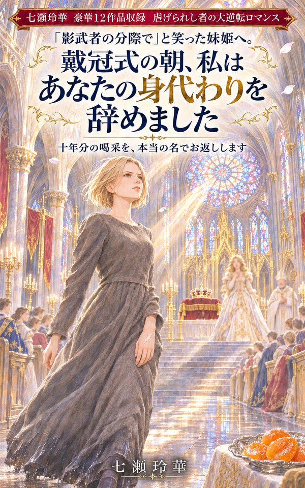

「影武者の分際で」と笑った妹姫へ。戴冠式の朝、私はあなたの身代わりを辞めました
豪華１２作品収録 虐げられし者の大逆転ロマンス
Story
あらすじ
今さら「戻ってこい」と言われても、もう遅い。
見下され、奪われ、名前さえ消された十二人の女性たち。けれど彼女たちには、誰にも奪えないものがあった――。
ざまぁ×大逆転×ロマンス。王宮、後宮、大奥、異世界から、現代の旅館、病院、洋菓子店まで。完全書き下ろし・一冊完結の長編十二作品を収録した、豪華オムニバス。
収録作品
第一話 「影武者の分際で」と笑った妹姫へ。戴冠式の朝、私はあなたの身代わりを辞めました
十年間、人前で声の出ない妹姫の代わりに演説し、条約に署名してきた双子の姉・リゼット。喝采はすべて妹のもの。父王が崩御し、戴冠式までの九十日、影の「始末」が決まる。嘘のつけない近衛騎士団長だけが、彼女に尋ねた。「あなたは誰だ」と。
第二話 「嫁は給金のいらない女中だ」と笑った老舗旅館の皆様へ。創業百年の祝宴で、私は暖簾をお返しします
温泉町の老舗旅館に嫁いで十一年。奈緒は給金なしで帳場も客室も回してきた。無口な花板だけが、賄いの盆に、彼女のための一品を置いていた。
第三話 「お前の名など煙と消える」と笑った貴妃様へ。皇太后の誕辰の宴で、その煙があなたの罪を語ります
後宮の下働きに落とされた香司の娘・白芷。調えた香の手柄はすべて貴妃に奪われる。十二年前のある嘘を抱えた、香りの分からない皇弟が、彼女の前に現れる。
第四話 「あんた、このクラスにいたっけ？」と笑った元同級生の皆様へ。十五年目の同窓会で、私が全員の出席を取ります
いじめられ、「いなかった」ことにされた高校時代。校閲者になった灯のもとに、閉校記念の同窓会の知らせが届く。毎朝あいさつだけはしてくれた同級生は、母校の教師になっていた。
第五話 「お前の結界など飾りだ」と笑った王太子殿下へ。王都の謝罪の場で、私は飾りの値段をお教えします
何も起きない夜を九年守り続けた結界師シエナは、「飾り」と笑われ追放される。その見えない仕事を、ずっと見ていたのは竜王だった。
第六話 「家政婦なんて家具と同じ」と笑った資産家一族の皆様へ。遺言の開封の日、その家具が三十年分の日誌を開きます
三十年仕えた主人を見送った六十二歳の家政婦・澄江に、窃盗の疑いがかけられる。湯呑を自分で盆に戻す、ただ一人の客がいた。
第七話 「お末が字を読むなど、猫が経を読むようなもの」と笑った御年寄様へ。御台所様の御前のお裁きで、私がその帳面を読み上げます
偽手形で潰された父の店。大奥の最下層・御末として奉公に上がった糸は、字と算盤で一段ずつ上っていく。蘭方を隠す奥医師とともに。
第八話 「女の剣など鍋をかき混ぜる棒だ」と笑った騎士団長閣下へ。決闘裁判の円陣で、私がその棒で神の答えをお見せします
砦の陥落の罪を着せられ、騎士の位を剥がれた女騎士ロズ。国境の宿場でおたまを握る彼女の前に、敵国の将軍が現れる。
第九話 「お前の絵など台所の落書きだ」と笑った画伯の旦那様へ。銀座の大回顧展で、その署名が誰のものかお教えします
昭和四十年代の銀座。高名な画伯の絵は、十八年間、妻の咲子が台所で描いてきたものだった。台所から漂うテレピン油の匂いに気づいていたのは、亡き画商の手帳だけだった。
第十話 「女の縫合など漁師の網繕いだ」と笑った教授へ。学会総会の壇上で、その網を誰が編んだかお見せします
術式を教授に奪われ、海辺の病院へ追われた外科医・遥。盗まれた術式は、嘘の数字をまとって全国に広まろうとしていた。
第十一話 「写すしか能のない女など王妃にいらない」と笑った王太子殿下へ。卒業夜会の断罪の場で、その写しを一枚ずつお返しします
「写し」の魔法しか持たない公爵令嬢アデライド。悪女に仕立てられた彼女の手元には、消すことも偽ることもできない写しが残っていた。
第十二話 「お前の菓子なんて、量れば誰でも作れる」と笑った夫と義妹へ。生放送の菓子コンクール決勝で、量れない一匙をお見せします
銀座の人気洋菓子店の配合は、すべて妻・ひよりのものだった。夫と義妹に奪われた彼女に、老舗の和菓子職人が白餡を炊き続けていた。
奪われたのは、名前、声、仕事、居場所。今さら「戻ってこい」と言われても、もう遅い。
虐げられた女性たちが、自分の力で取り戻す、痛快で温かい大逆転ロマンス。
More Stories